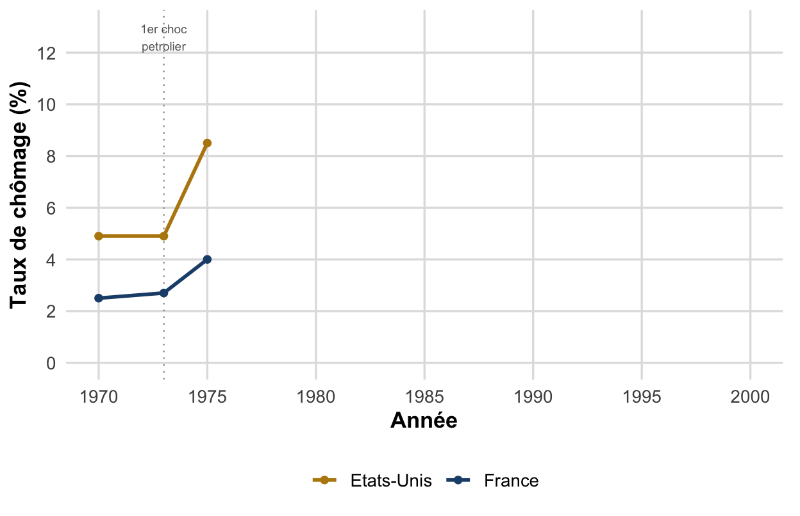
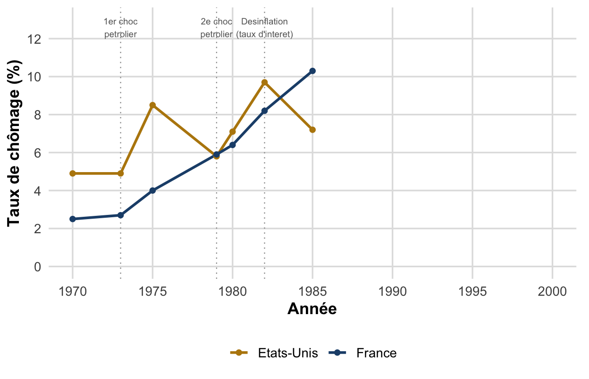
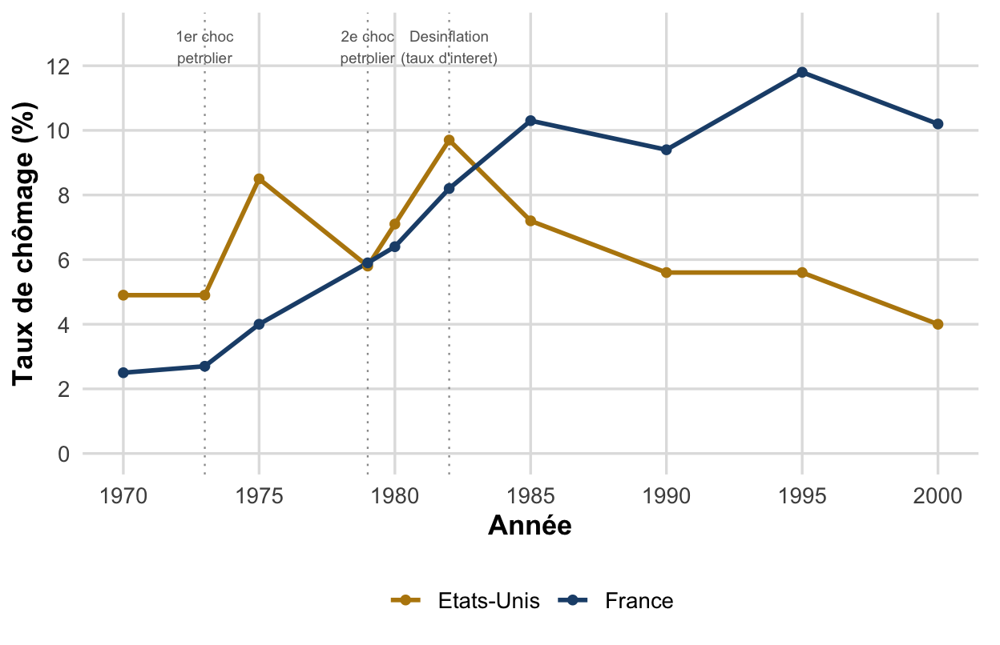
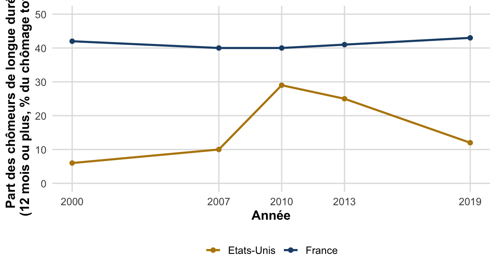
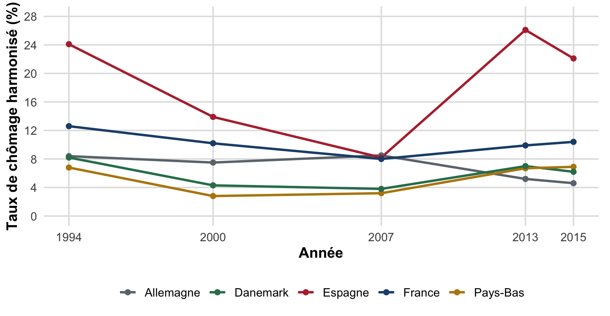
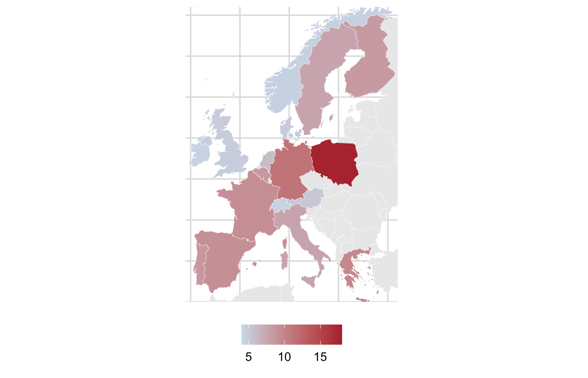

flowchart LR
A[Demande anticipee insuffisante] --> B[Production revue a la baisse]
B --> C[Emploi reduit]
C --> D[Chomage keynesien]
Chapitre II, Partie 1, §IV-V
L2 AES : Semestre 1
Source : d’après le cours de M. Ouedraogo (CERDI, UCA), Chapitre II §1.4-1.5.
À l’issue de ce cours, vous saurez
Rappel du CM précédent : deux pays peuvent afficher le même taux de chômage avec des taux d’activité, des taux d’emploi et des dynamiques de flux totalement différents.
D’où la nécessité d’une typologie : chaque forme de chômage a sa propre cause et son propre remède.
Chômage structurel (long terme) : lié aux mutations durables des structures de l’économie : rigidités du marché du travail, changement technologique, inadéquation des qualifications. Il appelle des réformes structurelles agissant sur l’offre.
Chômage conjoncturel (court terme) : chômage temporaire lié à une baisse ponctuelle de l’activité économique. Il appelle des politiques de relance de la demande d’inspiration keynésienne.
Cette distinction structure toute la suite du chapitre : les cadres théoriques néoclassique et WS-PS expliquent le chômage structurel, le cadre keynésien le chômage conjoncturel.
| Type | Mécanisme |
|---|---|
| Frictionnel (mobilité) | Temps nécessaire pour retrouver un emploi entre deux postes, transition inévitable, même proche du plein emploi. |
| Classique (volontaire) | Rigidité à la baisse du salaire réel : un salaire trop élevé réduit la rentabilité et donc l’embauche. |
| Technologique | Substitution du capital (machines) au travail pour accroître la productivité. |
| D’inadéquation | Décalage entre les compétences offertes par les travailleurs et celles demandées par les entreprises. |
Signe caractéristique du chômage classique : chômage élevé, salaires élevés, faible rentabilité des entreprises, coexistence typique.
| Type | Mécanisme |
|---|---|
| Keynésien | Insuffisance de la demande anticipée par les entreprises sur le marché des biens et services. |
| Technique | Baisse momentanée de l’activité (chute de la demande, rupture d’approvisionnement…) ; les travailleurs conservent leur contrat. |
Signe caractéristique du chômage keynésien : chômage élevé, salaires faibles, demande de biens et services faible, le miroir inversé du chômage classique.
flowchart LR
A[Demande anticipee insuffisante] --> B[Production revue a la baisse]
B --> C[Emploi reduit]
C --> D[Chomage keynesien]
D’où le remède : une relance de la demande peut suffire à relancer la chaîne en sens inverse, inutile d’agir sur les structures de l’offre.
Chômage structurel (long terme)
→ réformes structurelles (offre)
Chômage conjoncturel (court terme)
→ politiques de relance (demande)
Source : Chapitre II, §1.4.
flowchart TD
A[Chomage] --> B[Structurel - long terme]
A --> C[Conjoncturel - court terme]
B --> B1[Frictionnel]
B --> B2[Classique]
B --> B3[Technologique]
B --> B4[Inadequation]
C --> C1[Keynesien]
C --> C2[Technique]
Avertissement
Structurel/conjoncturel ≠ volontaire/involontaire
Ces deux distinctions se recoupent partiellement, mais ne sont pas identiques :
L’évolution du chômage en Europe et aux États-Unis depuis les années 1970 permet d’illustrer concrètement chacune de ces formes de chômage, et de comprendre pourquoi un même choc peut avoir des conséquences très différentes selon le pays.
Trois grandes séquences : le choc pétrolier des années 1970, la désinflation du début des années 1980, puis la divergence institutionnelle des années 1990-2000.
Les deux chocs pétroliers (1973 et 1979) provoquent une stagflation : hausse simultanée du chômage et de l’inflation, sous l’effet conjugué de :
La stagflation est un phénomène nouveau : jusque-là, on pensait chômage et inflation liés par une relation inverse (courbe de Phillips de court terme, voir CM 7).
Pour juguler l’inflation, les banques centrales relèvent fortement leurs taux d’intérêt (choc de demande négatif) : le chômage augmente fortement des deux côtés de l’Atlantique.
États-Unis
→ choc temporaire
Europe
→ choc durable
Trois moments clés : cliquez pour dérouler les deux chocs pétroliers, puis la désinflation et ses suites.



Après la désinflation du début des années 1980, le chômage retombe aux États-Unis mais reste durablement élevé en France. Sources : BLS (États-Unis, taux de chômage civil, moyenne annuelle, série LNS14000000) ; France : série nationale BIT (Banque mondiale, WDI) à partir de 1980, INSEE/OCDE pour 1970-1979 ; comparaison indicative. Années sélectionnées, 1970-2000.
Hystérèse du chômage. Un choc temporaire sur l’économie peut avoir des effets permanents, empêchant le retour de l’économie à son état initial. Appliquée au marché du travail : une longue période de chômage élevé fait augmenter le taux de chômage structurel lui-même.
Ce mécanisme explique en partie pourquoi la désinflation des années 1980, coûteuse en emplois à court terme, a laissé des traces durables sur le chômage structurel européen.
Ces trois canaux se renforcent mutuellement : plus le chômage dure, plus il devient difficile d’en sortir, un cercle auto-entretenu.
Un même taux de chômage agrégé peut cacher des dynamiques de persistance très différentes (rappel du CM3) : la part des chômeurs de longue durée en est un indicateur direct.

Figure 4: Part des chômeurs de longue durée (12 mois ou plus) dans le chômage total, États-Unis vs France.
Aux États-Unis, cette part bondit après la crise de 2008 puis redescend ; en France, elle reste durablement proche de 40 %, quel que soit le cycle. Source : OCDE, Perspectives de l’emploi (incidence du chômage de longue durée), années sélectionnées, 2000-2019.
Aux États-Unis, la persistance suit surtout le cycle (choc, puis retour progressif) ; en France, elle est structurelle et permanente, signe d’une hystérèse plus profondément installée.
flowchart LR
A[Choc temporaire] --> B[Chomage de longue duree]
B --> C[Decouragement]
C --> D[Depreciation du capital humain]
D --> E[Hausse du chomage structurel]
E --> B
La flèche de retour vers le chômage de longue durée illustre le caractère auto-entretenu du mécanisme : sans intervention, le cercle ne se brise pas de lui-même.
Le chômage européen atteint un pic dans les années 1990, mais on observe ensuite une divergence croissante entre pays européens.

Figure 5: Des chocs largement communs dans les années 1970-1980 débouchent sur des trajectoires nationales opposées : l’Allemagne, les Pays-Bas et le Danemark décrochent vers le bas, l’Espagne et la France restent hautes ou repartent à la hausse. France : série nationale BIT (Banque mondiale, WDI) ; comparaison indicative. Source : OCDE/Eurostat, taux de chômage harmonisé (définition BIT), années sélectionnées, 1994-2015.
Cette divergence remet en cause l’explication purement hystérétique : les chocs des années 1970-1980 étaient largement communs à toute l’Europe et ne peuvent, à eux seuls, expliquer des trajectoires nationales aussi différentes dans les décennies suivantes.
→ L’attention se porte alors sur les institutions nationales du marché du travail.

Figure 6: Taux de chômage harmonisé en Europe, 2005. Source : Eurostat, une_rt_a (définition BIT). Fond de carte : Natural Earth.
Pas de « voie unique » : les pays à faible chômage combinent des modèles institutionnels très différents (flexibilité au Royaume-Uni, flexisécurité au Danemark), ce qui prépare le débat institutionnaliste qui suit.
Thèse des rigidités. Le chômage élevé de certains pays européens proviendrait de contraintes excessives sur les entreprises, freinant leur adaptation aux chocs (mondialisation, changement technologique) : cotisations sociales élevées, coût des licenciements important, pouvoir syndical, allocations chômage généreuses, salaire minimum élevé par rapport au salaire médian.
Avertissement
Objection. Beaucoup de ces réglementations existaient déjà dans les années 1960, période de plein emploi, et certaines rigidités se sont même réduites depuis (allègements de charges, essor de l’emploi temporaire, affaiblissement syndical).
Le ralentissement des gains de productivité, l’accélération du changement technologique et la concurrence internationale accrue rendent aujourd’hui l’adaptation des entreprises bien plus nécessaire qu’en 1960, d’où un coût des rigidités plus élevé qu’autrefois.
États-Unis
Baisse des salaires réels sans hausse du chômage
Europe continentale (dont la France)
Hausse du chômage sans baisse des salaires réels
Deux modes d’ajustement possibles face au même choc structurel de baisse de la demande de travail peu qualifié.
Plusieurs combinaisons institutionnelles cohérentes permettent de réduire le chômage :
Condition : les différentes institutions du marché du travail doivent être complémentaires entre elles : un ajustement partiel et incohérent est pire que les deux extrêmes.
Ce débat ouvre directement sur les politiques actives et passives de l’emploi (Chapitre III).
La typologie du chômage vue aujourd’hui est la grille de lecture qui permettra, au Chapitre III, de juger quelle politique cible quel type de chômage.
Important
Rappel : évaluation. Le CC1 a lieu en TD cette semaine. Il porte sur la synthèse descriptive du marché du travail (CM 1 à 4) : indicateurs, mesures INSEE/BIT vs France Travail, halo du chômage, typologie et évolutions de longue période.
Source : Chapitre II, §1.4-1.5 ; Chapitre III (pont).
Macroéconomie 1, L2 AES